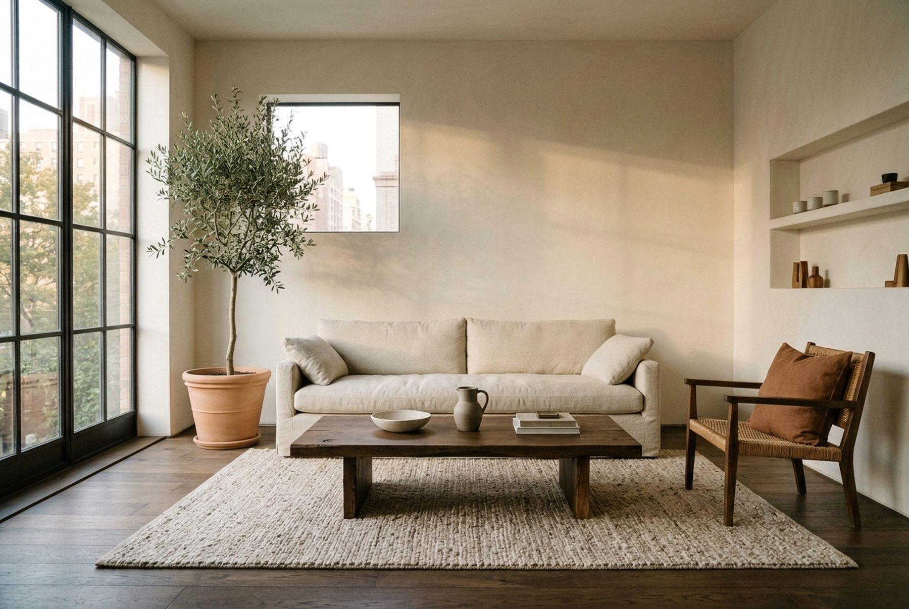

Décoration d'intérieur · New York
Je dessine des appartements et des lieux de travail à New York. Trois collections d'objets par an, et des ateliers en petit groupe pour apprendre à composer chez soi.

Le studio
Chaque projet commence par une visite, toujours en fin d'après-midi. Je regarde où tombe la lumière, par où vous entrez, ce que vous posez en rentrant, et où vous vous asseyez vraiment.
Ensuite seulement on parle de meubles. Dans cet ordre, les gens dépensent moins et se trompent moins.
Lire la suite